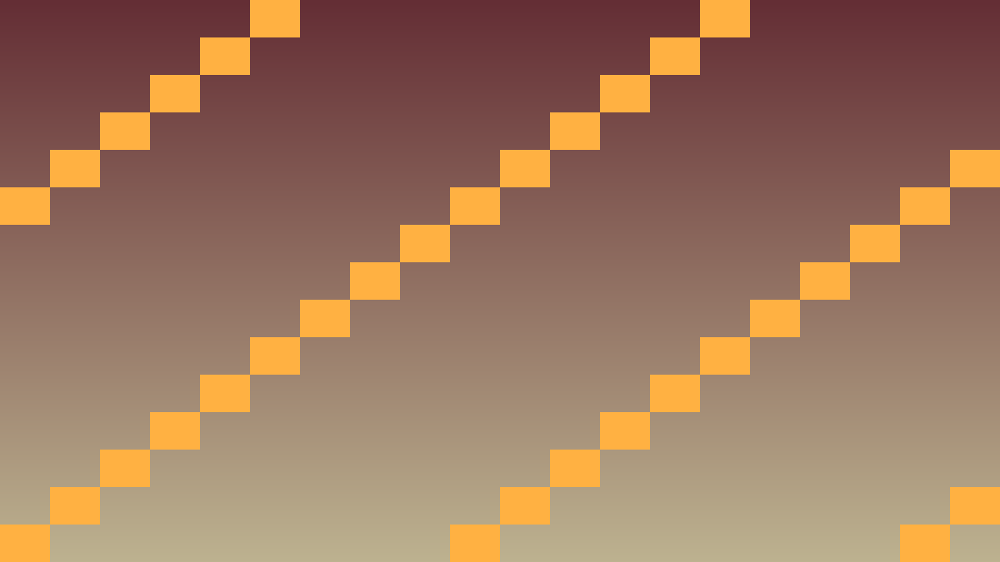
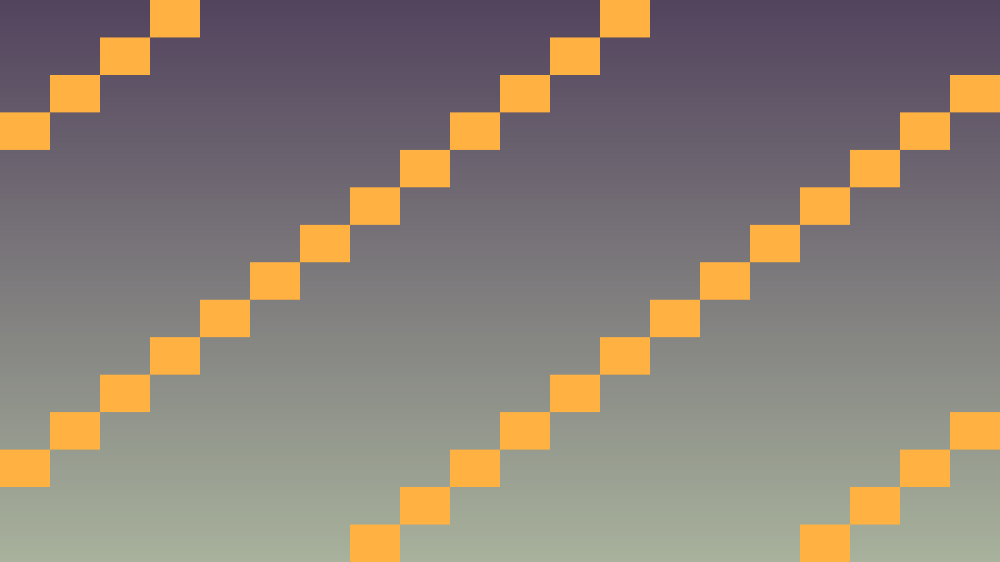
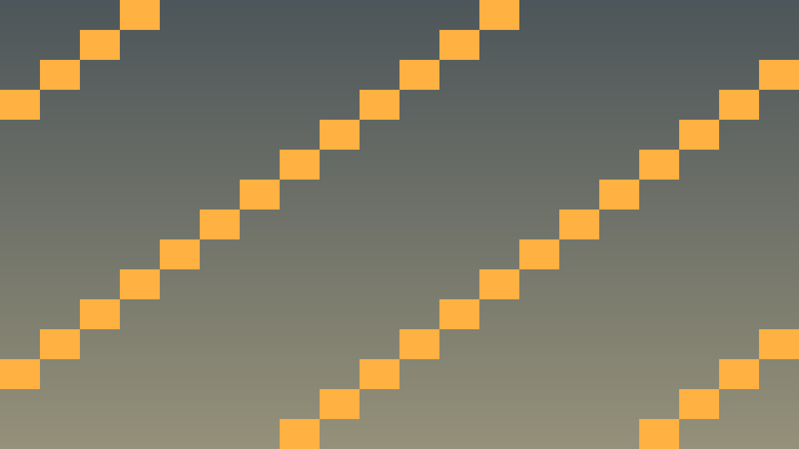

Tavs šīs stundas izaicinājums: Eksportēt spēli uz vairākām platformām un publicēt internetā.
Godot atbalsta eksportu uz: Windows, Linux, macOS, Web (HTML5), Android, iOS un konsolēm.
# Web eksporta soļi
# 1. Project → Export → Add → Web
# 2. Lejupielādē export templates: Editor → Manage Export Templates
# 3. Custom HTML — par default labi
# 4. Export Project → save as index.html mapē web_build/
# 5. web_build/ satur: index.html, .pck, .wasm, .js
# Lokāli testē:
python3 -m http.server 8000
# Atver http://localhost:8000GitHub Pages publicēšana: ielādē web_build saturu uz gh-pages branch un GitHub automātiski hosto.
Kritiskais fokuss: šajā stundā nepietiek tikai panākt redzamu efektu editorā. Jāspēj paskaidrot, kura C++ klase glabā stāvokli, kura metode to maina un kā Godot node struktūra šo kodu izmanto.
Pārbaudes pierādījums: UI signāli, audio darbības, debug izvade un publicēšanas sagatave ir sasaistīta ar C++ spēles stāvokli.
#include <godot_cpp/variant/string.hpp>
using namespace godot;
struct PolishCheckpoint {
String lesson = "6.5 Eksports un publicēšana";
bool uses_cpp = true;
bool connects_ui_signals = true;
bool routes_audio_events = true;
bool verifies_export_build = true;
};Izpildi šo darba plānu, lai 6.5 Eksports un publicēšana rezultāts būtu pārbaudāms C++ GDExtension projektā.
Callable vai reģistrētu C++ metodi.Sagatavo Windows .exe.
HTML5 publicēšana.
cd web_build && python3 -m http.server 8000Bezmaksas hostings.
https://username.github.io/repo.Komerciālu spēli pārdod.



#include <godot_cpp/classes/os.hpp>
#include <godot_cpp/variant/string.hpp>
#include <godot_cpp/variant/utility_functions.hpp>
using namespace godot;
struct ExportChecklist {
bool has_export_template = false;
bool has_cpp_library_for_target = false;
bool has_index_html = false;
bool tested_outside_editor = false;
bool is_ready_to_publish() const {
return has_export_template
&& has_cpp_library_for_target
&& has_index_html
&& tested_outside_editor;
}
};
void ExportReporter::print_status(const ExportChecklist &checklist) {
UtilityFunctions::print("Platform: ",
OS::get_singleton()->get_name());
UtilityFunctions::print("Ready to publish: ",
checklist.is_ready_to_publish());
}